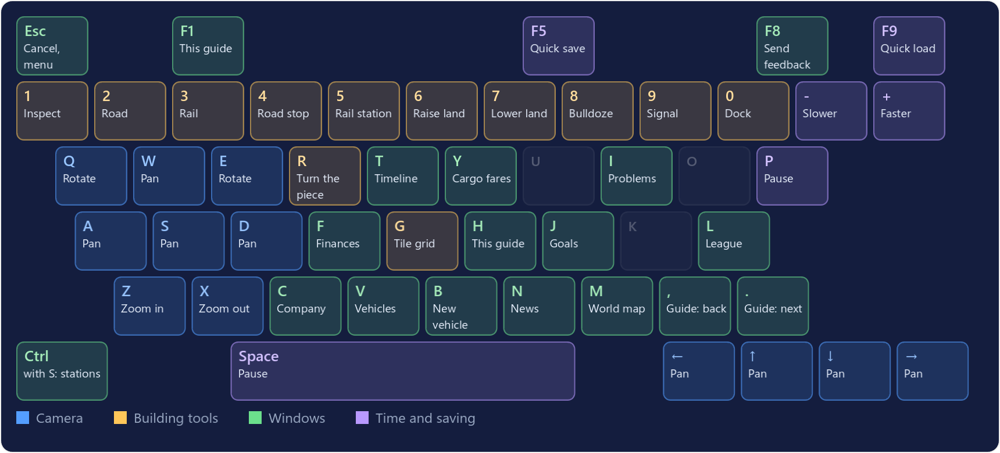

Controls
Keyboard, mouse and trackpad, on Windows and on a Mac.
Coloured keys do something. The colour says what kind of thing.


Moving the view
| Mouse | Trackpad | Keyboard | |
|---|---|---|---|
| Pan | Drag with the right button. With Inspect, the left button drags too. | Scroll with two fingers. | W A S D or the arrow keys. |
| Zoom | Turn the wheel. | Pinch, or hold Ctrl and scroll. | Z and X, or Page Up and Page Down. |
| Rotate | Drag with the middle button, or hold Alt and drag. | Hold Alt and scroll sideways. | Q and E, a quarter turn each. |
- The view also scrolls when the mouse touches the edge of the screen. Settings can switch that off.
- Prefer scrolling to zoom on a trackpad? Turn on Two-finger scroll zooms in Settings; then Ctrl and scroll pans.
Building and inspecting
- Left button: use the current tool. Click to place, drag to build lines and areas.
- Right click: cancel. The first click drops the drag in progress, the next puts the tool away.
- Esc does the same, then closes the top window, then opens the game menu.
- R turns a station, depot or airport before you place it. With a bridge tool it changes the bridge style.
- With Inspect, the pointer becomes a hand over anything you can open, and a ring marks the vehicle a click would open. Where several things overlap, click again for the next one.
- Rest the pointer on a vehicle and its route is drawn on the map in its company's colour, with the stops numbered in order. It stays while the vehicle's window is open.
- O steps through the map layers: station ratings, waiting cargo, coverage (which houses and industries your stations reach) and land value. The small button on the minimap lists them, a legend says what the colours mean, and Esc turns the layer off.
- The last layer, Problems, puts a pin on everything on the Problems list: point at a pin to see what is wrong, click it to open it.
- Bridges, tunnels, depots, wires, airports, Level land and the Connect tools have no key: pick them from their group on the toolbar.
- Ctrl+Z undoes your last piece of construction and gives the money back. See Land & bulldozing.
Windows and Mac
The game is the same on both. Only these keys differ:
| Windows, Linux | Mac | |
|---|---|---|
| Stations | Ctrl+S | ⌘S |
| Lines | Ctrl+L | ⌘L |
| Undo construction | Ctrl+Z | ⌘Z |
| Quick save | F5 or Ctrl+Shift+S | ⇧⌘S |
| Quick load | F9 or Ctrl+Shift+L | ⇧⌘L |
| Full screen | F11 or Alt+Enter | ⌃⌘F |
| Send feedback | F8 | fn+F8, or the game menu |
| Rotate by dragging | Alt | ⌥ Option |
| Right click | Right button | Right button, or Ctrl + click |
| Zoom by scrolling on a trackpad | Ctrl | ⌘ Command |
| Find a topic in this guide | Ctrl+F | ⌘F |
Time
- Space or P pauses and resumes. You can build while the game is paused.
- + and - change the speed: normal, x2, x4, x8. At normal speed a day lasts about 2 seconds.